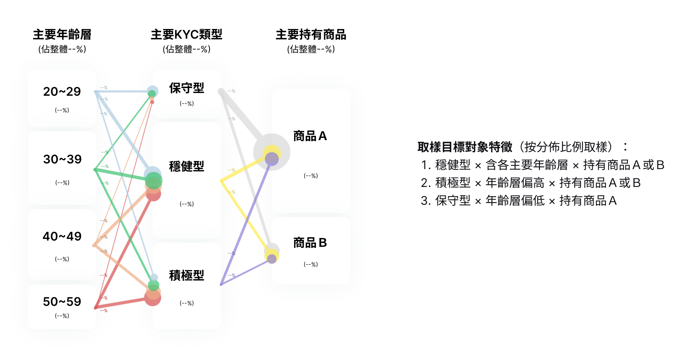

OBJECTIVES
1.Explore the demographics of the product audience to provide references for subsequent product strategy.
• Define representative characteristics of loyal and long-term users, aiming to identify the true audience of the product and attempt expansion.
• Research Question: What characteristics define the users of this product?
2.Test usability issues of the new version design to provide references for design adjustments.
• The new version design adjusts some information presentation methods and adds investment performance history information.
• Research Question: Can users correctly understand the information? Is the operation smooth?
TARGET RESEARCH SUBJECTS

Derived representative characteristics that suited the product's focus on online channel users from actual user data, taking into account factors like gender, age, KYC results, investment holdings, and rebalancing behavior. Employed statistical analysis techniques during the user data analysis to identify relationships between these factors (e.g., the correlation between age and KYC results) to ensure the meaningfulness of the defined sampling characteristics. It was found that age, KYC results, and investment holdings emerged as the most representative factors. Subsequently, 9 participants were recruited from survey respondents who met specific criteria: they had used the product for a certain duration, expressed high satisfaction levels, and possessed the identified representative traits.
USABILITY TEST RESULTS
Main tasks in usability testing: (1) Review investment performance, (2) Review investment portfolio content, (3) Adjust investment amounts.
Usage scenarios, from user interviews:
Understanding the contexts in which users engage in these tasks is crucial for prioritizing design optimizations.
(1) Review investment performance:
Users access the platform infrequently, mainly during deductions, rebalancing, negative situations, or when considering redemption.
(2) Review investment portfolio content:
Users rarely check portfolio content unless prompted by market news, performance reviews, or rebalancing. They trust adjustment notifications, seeing frequent checks unnecessary.
(3) Adjust investment amounts:
Adjustments are minimal, considered only when funds increase or performance improves.
Usability issues, from usability test:
• Difficulty Finding Adjustment Entrance:
While overall operation is smooth, users find it challenging to locate the entrance for adjusting investment amounts. The new design's tab categorization improves clarity and user-friendliness compared to the original. Buttons for adjusting investment amounts or redeeming within the portfolio are more easily accessible. However, finding the entrance for adjusting investment amounts from the homepage is less intuitive.
• Information Comprehension Challenge:
Understanding information remains the primary pain point for users. Test results indicate that many users struggle to comprehend various pieces of information, such as cumulative return rate, annualized dividend yield, trends in cumulative return rates, details of realized positions, and explanatory text on fees.
Based on usage scenarios, it's evident that platform usage frequency is low, primarily occurring during deductions or rebalancing. In terms of usage frequency, optimizing the app and performance monthly reports may take precedence over the platform itself. Regarding the platform, the frequency of primary functionalities is roughly as follows: reviewing performance > reviewing portfolios > adjusting amounts. This can serve as a reference for prioritizing optimization directions.
BUILD PERSONA
Based on comprehensive observations and segmentation, we have compiled the following personas:
(1) Long-Term Stalwarts:
These individuals prioritize long-term stability when using automated investment services and prefer regular investments.
(2) Impulsive Explorers:
They view automated investment as an innovative tool and prefer lump-sum investments for observation purposes.
POTENTIAL DIRECTIONS TO EXPAND USER BASE
(1)Targeting Potential Long-Term Users: Marketing to individuals with loyal user traits to increase retention and foster long-term commitment.
Target Audiences:
• Existing brand loyalists
• Working professionals seeking stability
• Individuals with minimal history of selling investments
• Those with a higher proportion of long-term holdings
• Existing users of passive investment products
Segments:
• Long-Term Stalwarts: Less investment familiarity, conservative risk profile
• Impulsive Explorers: Higher investment familiarity, aggressive risk profile
Marketing Approaches:
• Emphasize "Simplicity and Convenience"
• For Stalwarts: Highlight ease of long-term investing, encourage monthly contributions.
• For Explorers: Emphasize convenience of trying new investments with lump-sum options.
• Focus on "Overall Stability" to promote long-term loyalty.
• Minimize competitor comparisons, as loyal users typically don't compare actively.
Communication Channels:
• Utilize app/online banking platforms, push notifications, and EDMs.
• Incorporate user feedback channels for future marketing insights.
• Provide "pre-purchase target information" to persuade Impulsive Explorers.
(2)Engaging Existing Users: Retaining Users and Encouraging Investment
• Clarify Rebalancing Process: Explain the role of stability in market fluctuations to improve user understanding and encourage portfolio rebalancing during performance dips.
• Improve Interface Usability: Address ongoing usability issues and enhance integration between the app and platform to ensure a seamless user experience.
• Optimize Profit/Loss Information: Provide clear profit/loss insights to encourage investment retention and reduce redemption frequency. Offer incentives for increased investment during opportune times, such as salary bonuses or positive performance periods.
• Enhance Engagement: Connect users with market news to increase their involvement and promote active monitoring of their portfolios.